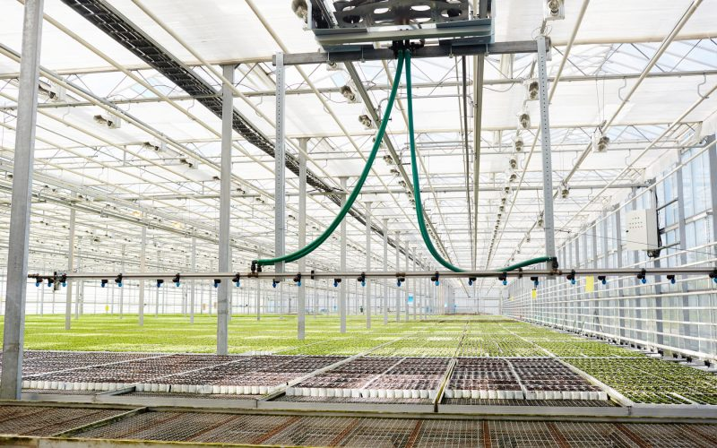
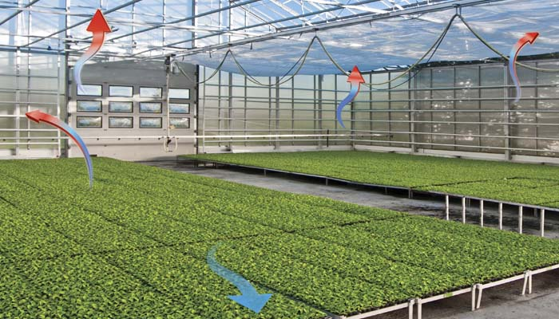
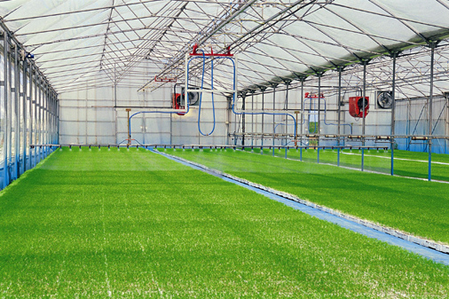

Proyectos Automatizados Díaz
Automatización Inteligente para Invernaderos
Optimizamos el rendimiento de tu cultivo con tecnología de vanguardia.
Nuestros Servicios
- Instalación de sistemas automatizados
- Mantenimiento preventivo y correctivo
- Monitoreo y control de clima, riego y fumigación
Ejemplos de Proyectos


